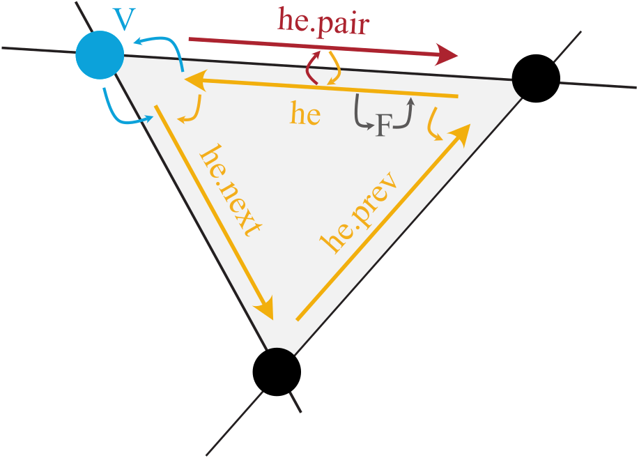

Halfedge Data Structure#
Introduction#
In PyMembrane, a sophisticated data structure known as the halfedge data structure is used to represent complex meshes. This data structure introduces a convenient way to organize the vertices, edges, and faces of a polygonal mesh. By augmenting the mesh components with additional entities called halfedges, we can achieve more efficient traversal and manipulation of the mesh.
Halfedge Structure#
The essence of the halfedge data structure lies in the concept of splitting each edge of a face into two twin directed half-edges. This new entity, the halfedge, acts as a guide within each triangle, creating a network of interconnected edges that facilitate quick navigation within the mesh. The illustration below provides a visual representation:
Key Features#
The halfedge structure offers several key features that contribute to its efficiency:
Vertex and Face Relations: Each halfedge stores information about its adjacent vertices and the corresponding face. This enables seamless navigation between vertices and faces.
Neighbor Connectivity: Halfedges maintain pointers to their immediate neighbors – the succeeding and preceding halfedges within the same face. This connectivity streamlines traversing along edges within a face.
Twin Halfedges: Every halfedge has a twin counterpart that shares the same pair of vertices. This pairing ensures consistent traversal between edges and their opposites.
Traversal Example#
Here’s a practical example of how to use the halfedge structure in PyMembrane:
# Create a system
system = System()
# Read the mesh from input files
vertex_file = 'vertices.inp'
face_file = 'faces.inp'
mesh = {'vertices': vertex_file, 'faces': face_file}
system.read_mesh_from_files(files=mesh)
# Traverse edges connected to vertex 0
vertex_index = 0
he_first = system.vertices[vertex_index]._hedge
he = he_first
while True:
print(system.halfedges[he].edge)
# Move to the next edge
he_pair = system.halfedges[he].pair
he = system.halfedges[he_pair].next
if he == he_first:
break
Looping over halfedges#
halfedges = system.getHalfedges()
for index in range(len(halfedges)):
halfedge = halfedges[index]
...
Halfedge methods#
boundary: if true, the halfedge is a boundary
edge: edge this halfedge is part of
face face the half-edge borders
index vertex at the beginning of the half-edge
next next half-edge around the face
pair oppositely oriented adjacent half-edge
prev previous half-edge around the face
vert_from vertex at the beginning of the half-edge
vert_to vertex at the end of the half-edge